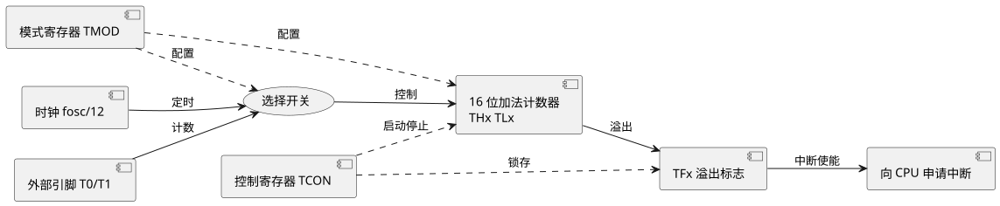

第 9 章 定时器/计数器
学习目标
- 理解 STC 8位单片机定时器/计数器（Timer/Counter）的内部结构与工作原理
- 掌握 TMOD、TCON 寄存器各位的含义及配置方法
- 熟练运用四种工作模式（模式 0/1/2/3）并掌握初值计算公式
- 能够编写定时器实现方波发生、精确延时、秒表等典型应用
- 了解 STC 定时器 2（Timer2）的功能与波特率发生作用
9.1 定时/计数器结构与工作原理
STC 内部集成了 3 个 16 位定时器/计数器，分别称为 Timer0（T0）、Timer1（T1）和 Timer2（T2）。其中 T0、T1 是 MCS-51 标准 IP，T2 是 8052 增强外设。每个定时器核心由加法计数器（THx/TLx）、输入选择开关、工作模式控制和溢出标志组成。
定时器与计数器的本质区别在于计数脉冲来源：当脉冲来自内部时钟（即 $f_{osc}/12$）时为定时器模式，可用于产生精确时间间隔；当脉冲来自外部引脚 T0（P3.4）或 T1（P3.5）时为计数器模式，可用于统计外部事件次数。计数器对每个下降沿采样一次，外部脉冲高低电平至少各保持一个机器周期。

查看 PlantUML 源码
@startuml
skinparam defaultFontName "Microsoft YaHei"
left to right direction
component "时钟 fosc/12" as A
component "外部引脚 T0/T1" as B
usecase "选择开关" as MUX
component "16 位加法计数器\nTHx TLx" as CNT
component "TFx 溢出标志" as FLAG
component "向 CPU 申请中断" as INT
component "模式寄存器 TMOD" as MODE
component "控制寄存器 TCON" as CTRL
A --> MUX : 定时
B --> MUX : 计数
MUX --> CNT : 控制
CNT --> FLAG : 溢出
FLAG --> INT : 中断使能
MODE ..> MUX : 配置
MODE ..> CNT : 配置
CTRL ..> CNT : 启动停止
CTRL ..> FLAG : 锁存
@enduml9.1.1 TMOD 寄存器（工作模式控制）
TMOD（Timer Mode，定时器模式寄存器）字节地址 89H，不可位寻址，高 4 位控制 T1，低 4 位控制 T0，各位定义如下：
| 位 | T1 部分 | 含义 | 位 | T0 部分 | 含义 |
|---|---|---|---|---|---|
| D7 | GATE | 门控位：1=INTx 高电平且 TRx=1 才运行；0=仅 TRx 控制 | D3 | GATE | 同 T1 |
| D6 | C/T | 计数/定时选择：1=外部计数；0=内部定时 | D2 | C/T | 同 T1 |
| D5 | M1 | 模式选择高位 | D1 | M1 | 同 T1 |
| D4 | M0 | 模式选择低位 | D0 | M0 | 同 T1 |
9.1.2 TCON 寄存器（控制与状态）
TCON（Timer Control，定时器控制寄存器）字节地址 88H，可位寻址，与定时器相关的 4 位定义如下：
| 位 | 符号 | 含义 |
|---|---|---|
| D7 | TF1 | T1 溢出标志：溢出时硬件置 1，中断响应后硬件清 0（查询方式需软件清 0） |
| D6 | TR1 | T1 运行控制：1=启动；0=停止 |
| D5 | TF0 | T0 溢出标志（同 TF1） |
| D4 | TR0 | T0 运行控制（同 TR1） |
| D3 | IE1 | 外部中断 1 边沿标志 |
| D2 | IT1 | 外部中断 1 触发方式：1=下降沿；0=低电平 |
| D1 | IE0 | 外部中断 0 边沿标志 |
| D0 | IT0 | 外部中断 0 触发方式 |
9.2 四种工作模式
通过 TMOD 中 M1、M0 两位可将 T0/T1 配置为 4 种工作模式，不同模式的计数位数、最大值与重装方式不同。
| M1 M0 | 模式 | 计数位数 | 最大计数值 | 是否自动重装 | 典型用途 |
|---|---|---|---|---|---|
| 00 | 模式 0 | 13 位（THx8 + TLx5） | 8192 | 否 | 兼容早期 8048，少用 |
| 01 | 模式 1 | 16 位（THx8 + TLx8） | 65536 | 否 | 常用，长时间定时 |
| 10 | 模式 2 | 8 位（TLx 计数，THx 重装） | 256 | 是（硬件自动） | 串口波特率发生、短时精确定时 |
| 11 | 模式 3 | T0 拆成两个 8 位 | 256+256 | TL0 否，TH0 否 | 仅 T0 支持，少用 |
9.2.1 模式 1（16 位定时器）
模式 1 是最常用的工作方式，由 THx 和 TLx 组成 16 位加 1 计数器，最大计数值 65536。计满溢出后 TFx 置 1，需软件重新装入初值才能继续定时。
9.2.2 模式 2（8 位自动重装）
模式 2 中 TLx 作 8 位计数器，THx 作重装初值寄存器。TLx 溢出时硬件自动将 THx 的值复制到 TLx，同时 TFx 置 1。该模式非常适合需要周期性精确中断的场合，特别是作为串口波特率发生器。
9.3 初值计算公式
定时器本质是加法计数器，每过一个机器周期（12 个时钟周期）加 1。设晶振频率为 $f_{osc}$，则机器周期 $T_{cy} = 12/f_{osc}$。若需要定时 $t$ 微秒，则所需计数次数 $N = t / T_{cy}$。计数器从初值 $X$ 开始加 1，溢出时计数 $2^n - X$ 次（$n$ 为计数位数），故：
$$X = 2^n - N = 2^n - \frac{t \cdot f_{osc}}{12}$$
其中 $n$ 取 13、16、8 分别对应模式 0/1/2。把 $X$ 的高 8 位装入 THx，低 8 位装入 TLx（模式 2 中 TLx 与 THx 装入相同值）。
9.3.1 计算示例（11.0592 MHz 与 12 MHz）
例 1：晶振 11.0592 MHz，使用 T0 模式 1 定时 50 ms，求初值。
$$X = 2^{16} - \frac{50000 \times 11.0592}{12} = 65536 - 46080 = 19456 = 0\text{x}4C00$$
故 TH0 = 0x4C; TL0 = 0x00;
例 2：晶振 12 MHz，使用 T0 模式 1 定时 50 ms，求初值。
$$X = 2^{16} - \frac{50000 \times 12}{12} = 65536 - 50000 = 15536 = 0\text{x}3CB0$$
故 TH0 = 0x3C; TL0 = 0xB0;
9.4 定时器应用
9.4.1 P1.0 输出 50 ms 周期方波（中断方式）
设晶振 12 MHz，使用 T0 模式 1 定时 25 ms，每中断翻转一次 P1.0，得到周期 50 ms 的方波。
#include <reg52.h>
sbit FOUT = P1^0; // 方波输出引脚
void Timer0_Init(void)
{
TMOD &= 0xF0; // 清 T0 模式位
TMOD |= 0x01; // T0 模式 1，16 位定时
TH0 = 0x9E; // 25 ms @12MHz: 65536-25000=40536=0x9E58
TL0 = 0x58;
ET0 = 1; // 允许 T0 中断
EA = 1; // 开总中断
TR0 = 1; // 启动 T0
}
void main(void)
{
Timer0_Init();
while (1) { /* 主循环空转，工作交由中断 */ }
}
void Timer0_ISR(void) interrupt 1
{
TH0 = 0x9E; // 重装初值
TL0 = 0x58;
FOUT = ~FOUT; // 翻转输出，得到方波
}
9.4.2 秒表（精确 1 秒）
使用 T0 模式 1 定时 50 ms，软件计数 20 次得 1 秒，从 00:00 计时到 99:59 循环。
#include <reg52.h>
unsigned char cnt_50ms = 0;
unsigned char sec = 0, min = 0;
void Timer0_Init(void)
{
TMOD &= 0xF0;
TMOD |= 0x01; // T0 模式 1
TH0 = 0x3C; // 50 ms @12MHz: 0x3CB0
TL0 = 0xB0;
ET0 = 1; EA = 1; TR0 = 1;
}
void main(void)
{
Timer0_Init();
while (1) { /* 主循环可调用显示函数显示 min/sec */ }
}
void Timer0_ISR(void) interrupt 1
{
TH0 = 0x3C; TL0 = 0xB0; // 重装
if (++cnt_50ms >= 20) {
cnt_50ms = 0;
if (++sec >= 60) {
sec = 0;
if (++min >= 100) min = 0;
}
}
}
9.5 计数器应用
将外部脉冲信号接入 T1 引脚（P3.5），配置 C/T=1，可统计外部事件次数。下面示例每检测到 10 个外部脉冲翻转一次 P1.0：
#include <reg52.h>
sbit LED = P1^0;
void Counter1_Init(void)
{
TMOD = (TMOD & 0x0F) | 0x50; // T1: C/T=1, 模式 1
TH1 = 0xFF; // 初值 65526，再计 10 次溢出
TL1 = 0xF6;
ET1 = 1; EA = 1; TR1 = 1;
}
void main(void)
{
Counter1_Init();
while (1) { /* 主循环空转 */ }
}
void Counter1_ISR(void) interrupt 3
{
TH1 = 0xFF; TL1 = 0xF6; // 重装
LED = ~LED; // 每 10 个外部脉冲翻转一次
}
9.6 STC 的定时器 2 简介
STC 额外提供 Timer2（T2），是一个 16 位自动重装定时器，由 T2MOD、T2CON 寄存器控制，相关引脚为 T2（P1.0）和 T2EX（P1.1）。T2 主要有两种工作方式：
- 16 位自动重装定时/计数器：RCAP2H、RCAP2L 保存重装值，溢出时硬件自动重装，可作精确定时。
- 波特率发生器：串口方式 1、3 时常用 T2 作为波特率发生器，相比 T1 模式 2 可获得更精确的波特率，并解放 T1 给其他用途。
T2 用作波特率发生器时波特率公式为：
$$\text{波特率} = \frac{2^{\text{SMOD}}}{32} \cdot \frac{f_{osc}}{12 \cdot (65536 - \text{RCAP2})}$$
典型初始化代码（以 11.0592 MHz、9600 bps 为例）：
void Timer2_BaudInit(void)
{
RCAP2H = 0xFF; // 9600 bps @11.0592MHz 重装值
RCAP2L = 0xDC;
T2CON = 0x34; // RCLK=TCLK=1, TR2=1
}
本章小结
- STC 内置 3 个 16 位定时器/计数器 T0、T1、T2，本质都是加法计数器，区别在于计数脉冲来源（内部时钟为定时，外部引脚为计数）。
- TMOD 配置工作模式与定时/计数选择，TCON 控制启停并锁存溢出标志 TFx。
- 四种工作模式中，模式 1（16 位）和模式 2（8 位自动重装）最常用，模式 2 特别适合波特率发生。
- 初值公式 $X = 2^n - \frac{t \cdot f_{osc}}{12}$ 是定时器应用的核心，11.0592 MHz 晶振便于波特率整除。
- 典型应用包括方波发生、精确延时、秒表、外部脉冲计数与波特率发生。
- T2 是 16 位自动重装定时器，常作串口波特率发生器以解放 T1。
思考题与习题
- 简述 STC 定时器与计数器模式的区别，以及各自典型应用场景。
- TMOD 与 TCON 的作用分别是什么？GATE 位为 1 时定时器启动条件是什么？
- 晶振 11.0592 MHz，使用 T0 模式 1 定时 20 ms，计算初值（写出 TH0、TL0 的十六进制）。
- 为什么串口通信常采用 11.0592 MHz 晶振而不是 12 MHz？请通过 9600 bps 的重装值计算说明。
- 编写程序：使用 T0 模式 1 在 P1.0 输出周期 100 ms 的方波（晶振 12 MHz），要求采用中断方式。
- 简述 Timer2 作为波特率发生器相比 Timer1 模式 2 的优势，并给出 11.0592 MHz 下 9600 bps 的 RCAP2 重装值。
参考文献
- 张毅刚. 单片机原理及应用——C51 编程 + Proteus 仿真（第 4 版）[M]. 北京：高等教育出版社, 2021.
- STC 官方. STC89C52RC 数据手册 [Z]. 2024. https://www.stcmcudata.com/
- 郭天祥. 新概念 51 单片机 C 语言教程 [M]. 北京：电子工业出版社, 2018.
- 何立民. 单片机高级教程——应用与设计（第 3 版）[M]. 北京：北京航空航天大学出版社, 2018.
- I. Scott MacKenzie. The 8051 Microcontroller (4th Edition) [M]. Pearson, 2006.